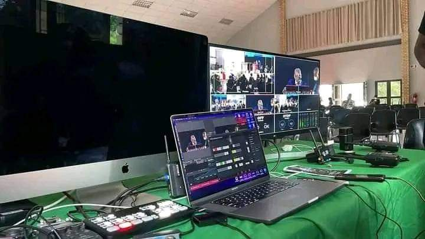

Podcast Production
Visual podcast experiences with cinematic lighting, premium sound and branded storytelling.
IMPILO STREAMING SERVICES
Premium digital broadcasting solutions for podcasts, fashion shows, interviews, performances and immersive multimedia storytelling experiences.

STREAMING SERVICES
IMPILO delivers immersive multimedia experiences through cinematic podcast production, live streaming and interactive fashion broadcasting.
Visual podcast experiences with cinematic lighting, premium sound and branded storytelling.
Multi-camera streaming setups for fashion shows, interviews and live entertainment events.
Premium runway coverage and backstage storytelling for modern fashion productions.